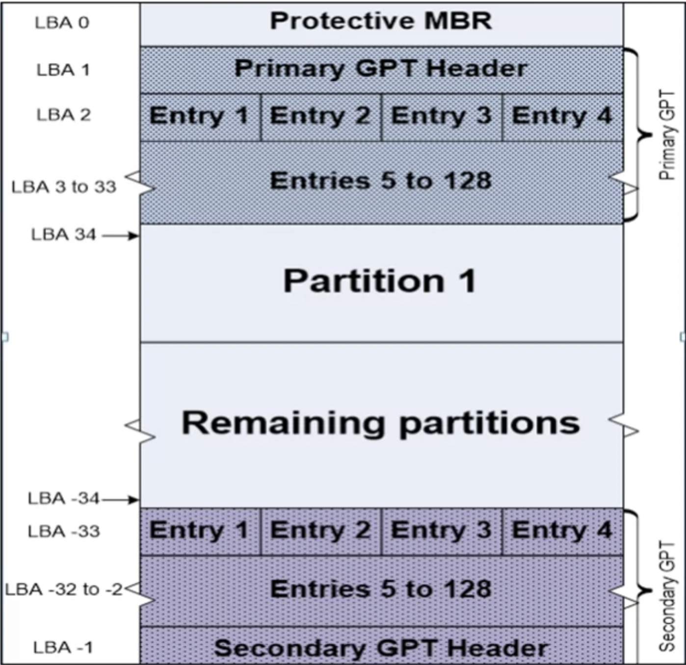
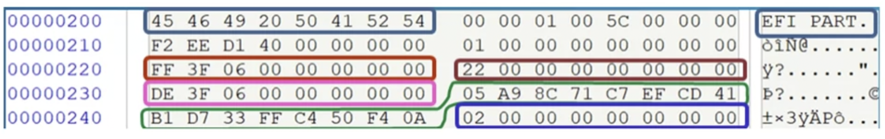
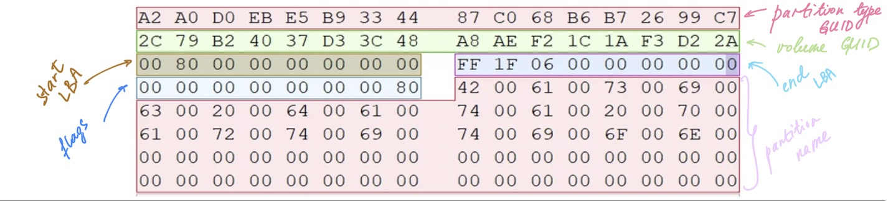

GUID is an identifier of the following format: 8-4-4-4-12. There is still a protective MBR at 0 so that Windows will not try to format the disk. Up to 128 partitions, each entry is 128 bytes long -> . The header is located in sector 1. Backup copy at the end of the disk. Uses GUID as partition identifiers.

Up to a 128 partitions, all of them can be set as bootable. Will still have a dummy MBR at sector 0 and it’s there for backwards compatibility.
Contains:
- Protective MBR record. At the offset where there are normally partiton entries, there is just one entry of type
0xEE, which starts at sector 1 and is0xFFFFFFsectors large. This is the pointer to the GPT header. 0x00offset. ASCII - EFI PART (0x45 46 49 20 50 41 52 54). This is a GPT signature.0x20offset. LBA of backup copy.0x28. LBA start of partition area (⚠️ in sectors!!!).0x30. LBA end of partition area (⚠️ in sectors!!!).0x38. Disk GUID.0x48. LBA start of partition tables.

A GPT entry contains:
0x00. Partition type GUID. Partition type GUIDs are listed on the Wikipedia page [2].0x10. Partition GUID.0x20. Start LBA0x28. End LBA0x30. Partition flags (read only, hidden flags etc)0x38. Partition name in Unicode.
Below is the live example of an entry:

⚠️ Remember that all the values are little-endian!
References
[1] InfoSec Institute Course, Coursera (all pictures are from the course or from the lab that I followed when watching the course). Definitely the one worth buying. Believe me.
[2] GPT, Wikipedia